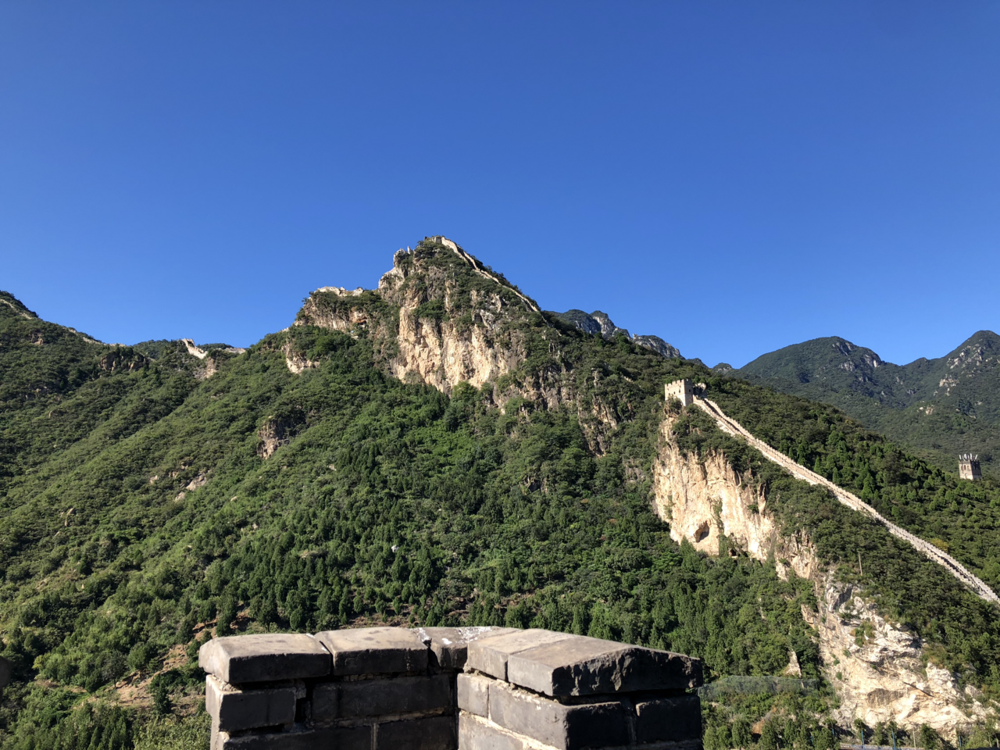
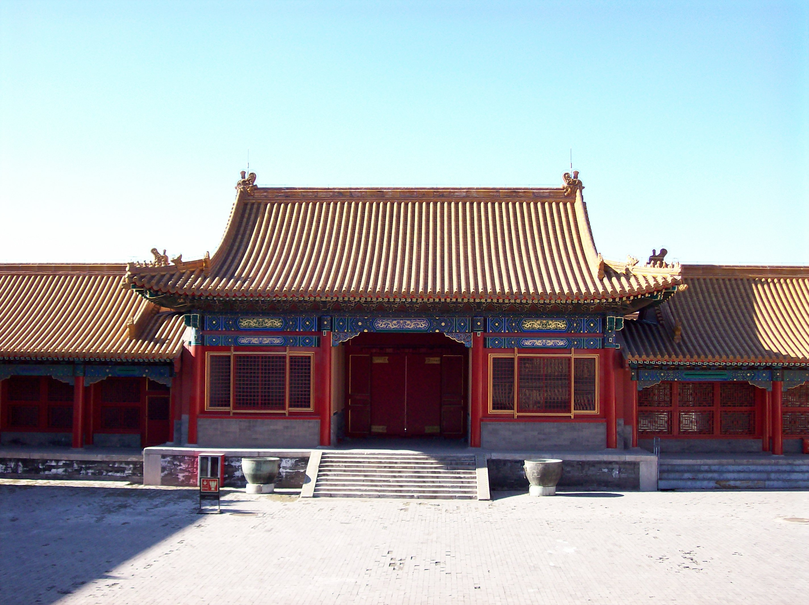
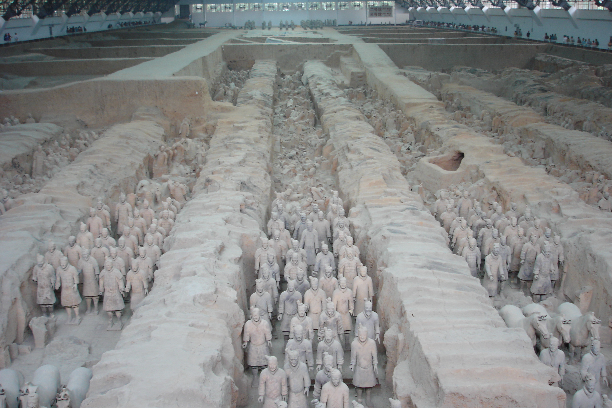
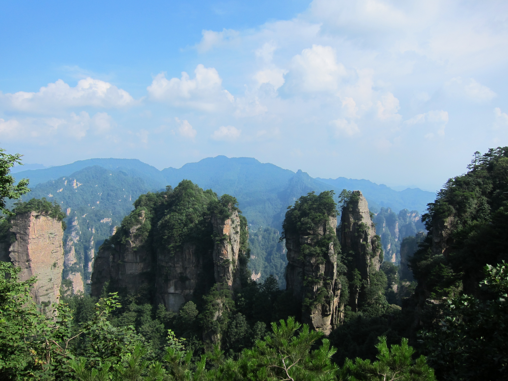
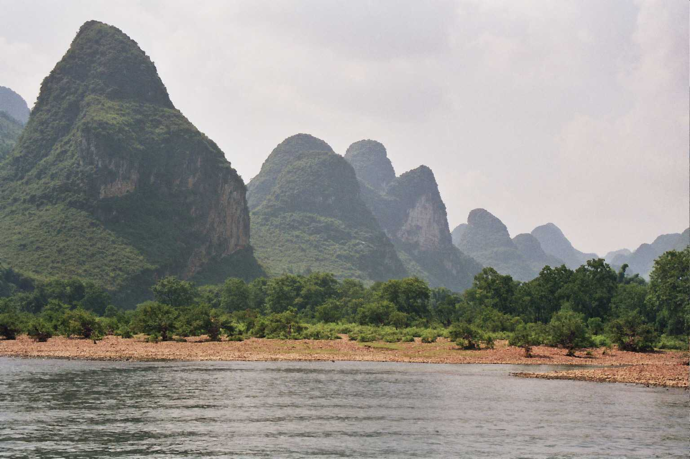
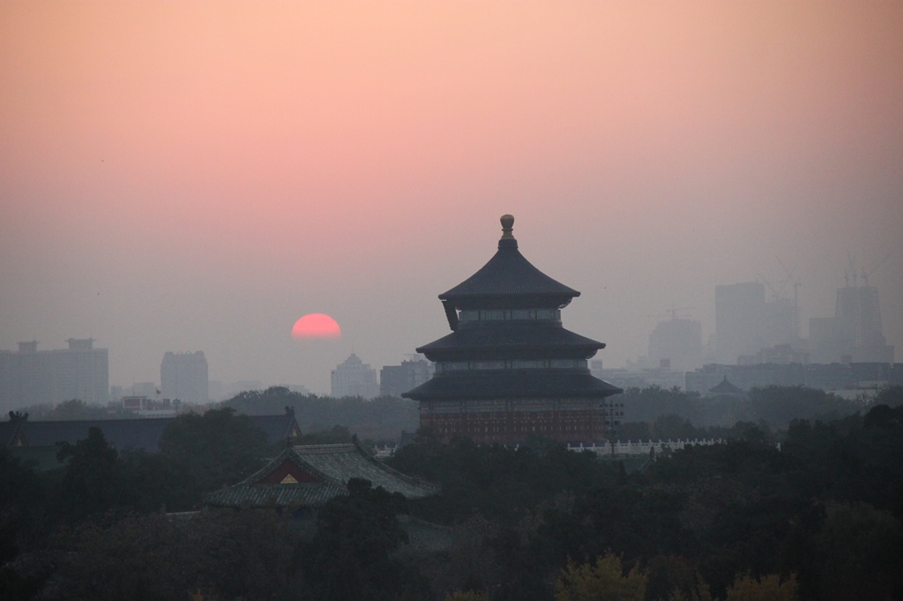

China — Pontos Turísticos
Galeria de fotos da China
Seis lugares para conhecer a história, a arquitetura e as paisagens da China.

Grande Muralha — Mutianyu
Fortificações construídas e ampliadas por diferentes dinastias ao longo de séculos.

Cidade Proibida — Pequim
Antigo conjunto de palácios imperiais no coração da capital chinesa.

Guerreiros de Terracota — Xi’an
Um exército de esculturas guarda o mausoléu do primeiro imperador Qin.

Parque Nacional de Zhangjiajie
Picos de arenito e florestas na província de Hunan, em uma paisagem singular.

Rio Li — Guilin
O rio atravessa formações cársticas que marcam a paisagem da região de Guangxi.

Templo do Céu — Pequim
Complexo cerimonial imperial conhecido pela arquitetura e pelo projeto paisagístico.